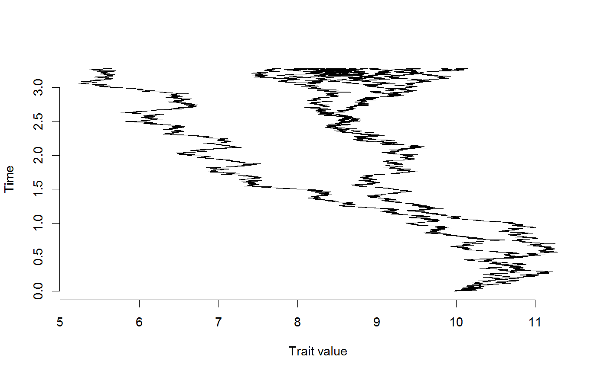
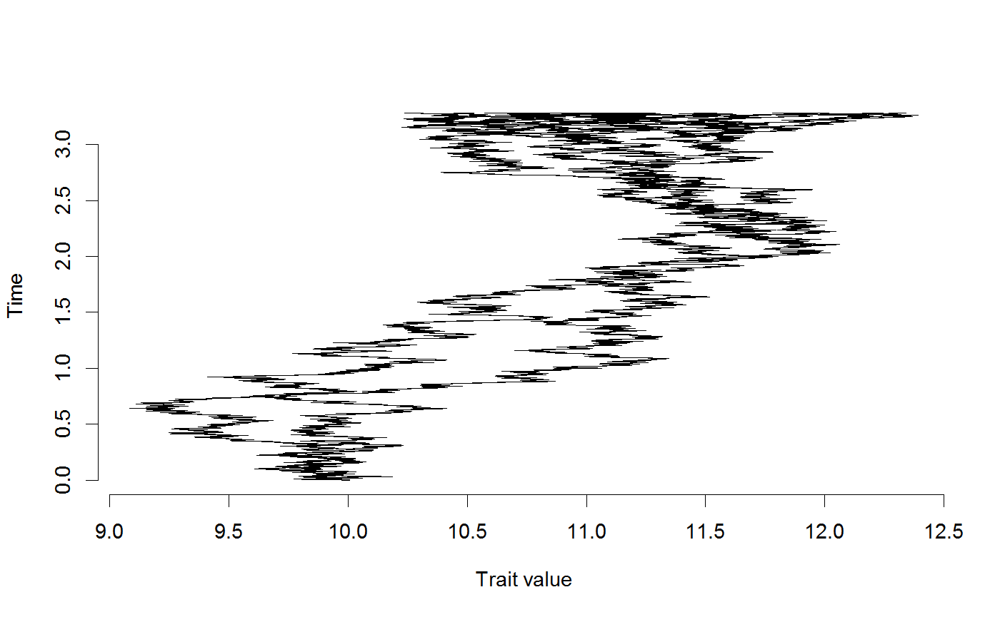
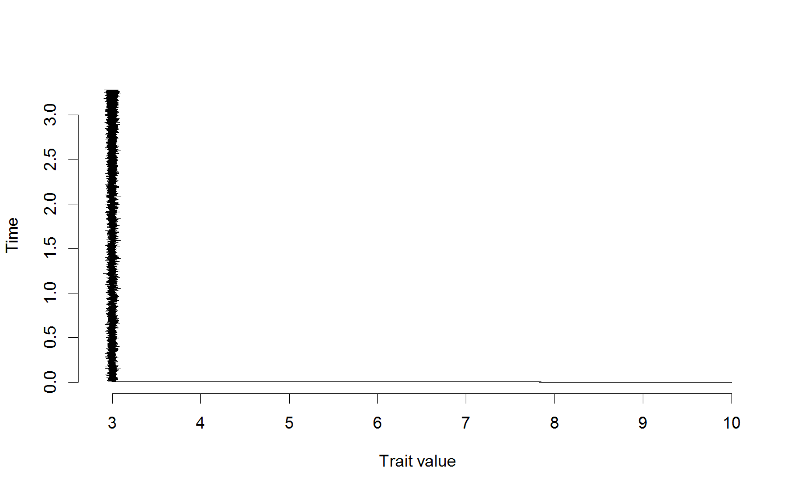

Functions describing various models of 'intrinsic' evolution (i.e. evolutionary processes intrinsic to the evolving lineage, independent of other evolving lineages (competitors, predators, etc).
nullIntrinsic(params, states, timefrompresent) brownianIntrinsic(params, states, timefrompresent) boundaryIntrinsic(params, states, timefrompresent) boundaryMinIntrinsic(params, states, timefrompresent) autoregressiveIntrinsic(params, states, timefrompresent) minBoundaryAutoregressiveIntrinsic(params, states, timefrompresent) autoregressiveIntrinsicTimeSlices(params, states, timefrompresent) autoregressiveIntrinsicTimeSlicesConstantMean(params, states, timefrompresent) autoregressiveIntrinsicTimeSlicesConstantSigma(params, states, timefrompresent)
| params | describes input paramaters for the model (see Description) |
|---|---|
| states | vector of states for each taxon |
| timefrompresent | which time slice in the tree |
A matrix of values representing character displacement from a single time step in the tree.
The following intrinsic models are:
nullIntrinsic describes a model of no intrinsic character change.
It has no parameters, really.
brownianIntrinsic describes a model of intrinsic character evolution via
Brownian motion.
The input parameters for this model are:
boundaryIntrinsic params = sd
boundaryIntrinsic describes a model of intrinsic character evolution where character
change is restricted above a minimum and below a maximum threshold.
The input parameters for this model are:
boundaryMinIntrinsic params = sd, minimum, maximum
boundaryMinIntrinsic describes a model of intrinsic character evolution where character
change is restricted above a minimum threshold.
The input parameters for this model are:
boundaryMinIntrinsic params = sd, minimum
autoregressiveIntrinsic describes a model of intrinsic character evolution. New
character values are generated after one time step via a discrete-time OU
process.
The input parameters for this model are:
autoregressiveIntrinsic params = sd (sigma), attractor (character
mean), attraction (alpha)
minBoundaryAutoregressiveIntrinsic describes a model of intrinsic character evolution. New
character values are generated after one time step via a discrete-time OU
process with a minimum bound.
The input parameters for this model are:
MinBoundaryAutoregressiveIntrinsic params = sd (sigma), attractor
(character mean), attraction (alpha), minimum
autoregressiveIntrinsicTimeSlices describes a model of intrinsic character evolution. New
character values are generated after one time step via a discrete-time OU
process with differing means, sigma, and attraction over time
In the various TimeSlices models, time threshold units are in time before present (i.e., 65 could be 65 MYA). The last time threshold should be 0.
The input parameters for this model are:
autoregressiveIntrinsicTimeSlices params = sd-1 (sigma-1),
attractor-1 (character mean-1), attraction-1 (alpha-1), time threshold-1,
sd-2 (sigma-2), attractor-2 (character mean-2), attraction-2 (alpha-2), time
threshold-2
autoregressiveIntrinsicTimeSlicesConstantMean describes a model of intrinsic character evolution. New
character values are generated after one time step via a discrete-time OU
process with differing sigma and attraction over time
The input parameters for this model are:
autoregressiveIntrinsicTimeSlicesConstantMean params = sd-1
(sigma-1), attraction-1 (alpha-1), time threshold-1, sd-2 (sigma-2),
attraction-2 (alpha-2), time threshold-2, attractor (character mean)
autoregressiveIntrinsicTimeSlicesConstantSigma describes a model of intrinsic character evolution. New
character values are generated after one time step via a discrete-time OU
process with differing means and attraction over time.
The input parameters for this model are:
autoregressiveIntrinsicTimeSlicesConstantSigma params = sd (sigma),
attractor-1 (character mean-1), attraction-1 (alpha-1), time threshold-1,
attractor-2 (character mean-2), attraction-2 (alpha-2), time threshold-2
# Examples of simulations with various intrinsic models (and null extrinsic model) tree<-rcoal(30) #Simple Brownian motion Intrinsic Model char<-doSimulationForPlotting( phy=tree, intrinsicFn=brownianIntrinsic, extrinsicFn=nullExtrinsic, startingValues=c(10), #root state intrinsicValues=c(0.01), extrinsicValues=c(0), timeStep=0.0001, plot=TRUE, saveHistory=FALSE)# Simple model with BM, but a minimum bound at 0, max bound at 15 char<-doSimulationForPlotting( phy=tree, intrinsicFn=boundaryIntrinsic, extrinsicFn=nullExtrinsic, startingValues=c(10), #root state intrinsicValues=c(0.01,0,15), extrinsicValues=c(0), timeStep=0.0001, plot=TRUE, saveHistory=FALSE)# Autoregressive (Ornstein-Uhlenbeck) model # with minimum bound at 0 char<-doSimulationForPlotting( phy=tree, intrinsicFn=minBoundaryAutoregressiveIntrinsic, extrinsicFn=nullExtrinsic, startingValues=c(10), #root state intrinsicValues=c(0.01,3,0.1,0), extrinsicValues=c(0), timeStep=0.0001, plot=TRUE, saveHistory=FALSE)